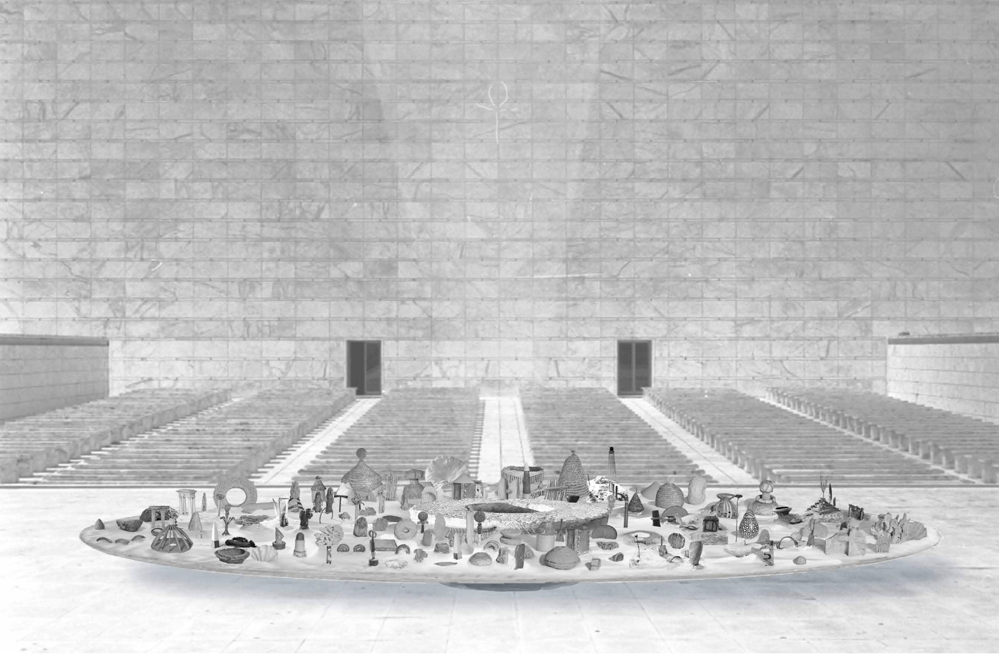

MAMA est un projet itinérant, un carrefour des cultures...
C’est une plaque tournante de neuf mètres de diamètre, soit une superficie de 63 mètres carrés, enchâssée dans un puit ancien et reposant à un mètre du sol.
L’ensemble tourne à la vitesse d’une rotation par jour et du puit central jaillit un faisceau de lumière.
Pensée pour faire escales aux quatre coins du monde, cette structure est recouverte de sable ou de la terre du pays accueillant l’oeuvre. Sur ce désert, un dialogue d’objets anciens issus de diverses cultures vient célébrer nos racines communes.
L’oeuvre s’assemble et se démonte selon un protocole défini. Démontée elle est entièrement transportable par container.

MAMA a pour vocation d’être accompagnée d’un cycle de conférences et débats autour des thèmes qu’elle aborde.
MAMA est un projet de paix, son art une revendication d’équilibre.
- LE CERCLE évoque l’analogie, la correspondance, le retour cyclique, non causal, des images. Le plateau et les éléments qu’il supporte suggère des sensations évidentes et des connaissances enfouies. Il nous invite à actualiser le souvenir de nos plus hautes aspirations.
- LE SABLE, c’est pour nous le seuil de la mer, le lien qui nous permet d’entrer en communion avec elle, en descendant la pente du ressac. C’est le composant du désert. Le désert qui est en nous et qu’il nous importe de contenir. Le désert merveilleux des dunes sur lesquelles danse la lumière dorée. Le sable symbolise la forme mouvante jamais achevée, la métamorphose perpétuelle des dunes qui se déplacent sans cesse. Nous étions poussière et nous redeviendrons poussière. Le sable évoque la succession des civilisations, leur caractère périssable.
- LES OBJETS. Temples, ponts, autels, éléments du dialogue des cultures. Sur la toile ocre, la matière sableuse irréductible, les éléments esthétiques suggèrent une permanence, une image de la beauté des temps anciens dont l’éclat nous parvient pour nous rappeler que rien ne meurt jamais.
- LA LUMIERE. Du centre du cercle jaillit un faisceau de lumière. c’est notre fibre morale, la puissance cosmique qui est en nous, notre nature surnaturelle, l’expression de notre instinct de lumière, du désir de rencontre, de l’inclination à l’échange et au partage qui est en chacun de nous.
- LE PUITS. Dans de nombreuses voies spirituelles (soufisme, judaïsme, animisme...), on distingue le puits qui reçoit ses eaux du ciel et le puits qui reçoit ses eaux du sein de la terre pour illustrer la question de l’homme et de la connaissance. Celui qui tient sa connaissance uniquement des autres agit par un mimétisme souvent aveugle et parfois destructeur, car propre à édifier une connaissance unique, supérieure, exclusive. Celui qui construit sa connaissance en apprenant des autres sans jamais cesser d’écouter sa voix intérieure atteint une connaissance personnelle ouverte au dialogue et à l’évolution.
- MAMA. Le titre, l’ensemble. L’image inimitable de la fécondité, de l’amour maternel. Nous sommes issus d’une même source.
Clément de la Tousche